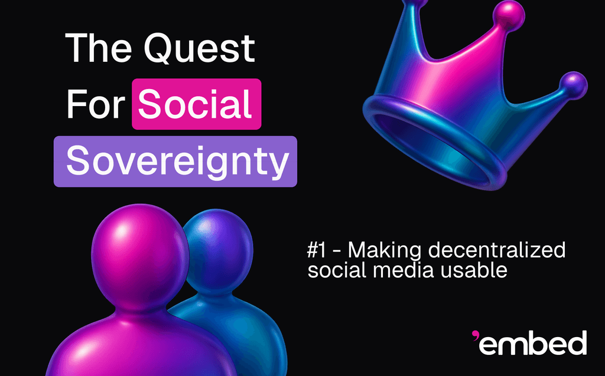

|

In our first blog, we explored the idea of social sovereignty—the right of individuals to be in control of their digital experiences. Here, we turn to social epistemology: how communities discover and agree on truth.
Social Epistemology is the study of how people gain, share, and assess knowledge through social processes — not just as lone thinkers, but as members of groups, institutions and networks. This study is concerned both with descriptive questions, such as how information flows and aggregates, and normative questions, such as how we ought to structure processes, norms and institutions to maximize the value and truthfulness of the resulting knowledge. It rests at the intersection of Philosophy, Mathematics, Computer Science and Psychology.
Many social epistemic concepts have already made their way into the public discourse: echo chambers or (epistemic) bubbles, misinformation, disinformation, propaganda, prediction markets, wisdom of the crowds, the replication crisis in Science, P-hacking, peer review, common knowledge, reputation, web of trust.
Furthermore, there are a number of human institutions centered around knowledge acquisition and information elicitation: courts should assess the veracity of accusations, surveys and elections elicit majority opinion and conferences and peer-reviewed journals increase the quality of academic publications.
However, there is an incidental evolved institution which also serves the purpose of information elicitation and aggregation: markets. Indeed, market prices are a culmination of two important pieces of information: supply and demand. They help entrepreneurs judge which enterprises are the most important, and they communicate to consumers what they can expend and what they should ration. Additionally, market prices incorporate information, as any individual or organization that believes in a significantly different future price for an asset can profitably buy or sell it. This concept has been taken to the extreme, first with betting houses and derivatives trading, and more recently with prediction markets.
In the realm of social media, there are a number of social epistemic problems. Content moderation needs knowledge of whether a piece of content violates a content policy or community guidelines. Fact-checking needs knowledge of the propositions being fact-checked themselves
1. As a matter of fact, it is possible to see fact-checking as a special case of content moderation, where the content policy allows exactly content which is true. However, we find it helpful to make the distinction that fact-checking is usually much more expensive labor-wise than moderation.
Despite recent large strides in moderation with the help of Machine Learning models, by and large this knowledge is not tractable to machines, and is instead extracted from human interactions. Indeed, in modern social media, moderators vote to moderate content or not, fact-checkers are employed to judge the veracity of posts and user features derived from their actions become inputs to recommendation systems. The question is then how good these systems are.
As we mentioned in our previous blog post, a critical mass of users is dissatisfied with content moderation and fact-checking in modern social media. They believe themselves or other content creators are unfairly censored, while others are permitted to keep policy-violating content. Some believe the platforms cater to outside government pressures (such as documented in the Twitter Files) and some believe many moderators are zealots who disregard content policy and instead judge content by ideological alignment. And why would it be any different? In other words, what incentives do oligopolistic platforms have to fight governments to protect users, and what incentives do moderators have to adhere to the content policy when they are underpaid and unaudited?
Clearly, social media is in dire need of better social epistemic processes for moderation and fact-checking. The beginning of our blog series will explore many such processes, called mechanisms, and seek to understand their suitability for social media. Our first object of study is the Birdwatch model, which underpins Community Notes.
In the Birdwatch model [3], each user \(u\) and each note \(n\) have two parameters. The first parameter, denoted \(f_u\) and \(f_n\), is called polarity, and is meant to represent the position of the user or note in an ideological spectrum. In the version of Birdwatch used in Community Notes, these polarities are real numbers. However, Birdwatch is a model inspired by Matrix Factorization, and can easily admit the placement of users and notes in a multidimensional spectrum, in which case \(f_u\) and \(f_n\) are vectors, called feature vectors.
The second parameter is called intercept, and its meaning is different for users and notes. The intercept \(i_u\) of a user models how “easy-going” or charitable the user is when rating, while the intercept \(i_n\) of a note models the intrinsic quality of the note. There are more technicalities in the model, such as the “global-mood” parameter \(\mu\) and hyper-parameters penalizing unrealistic polarities and intercepts, but we will overlook those in this exposition.
The Birdwatch model, like a Matrix Factorization model, tries to fit its parameters to explain the rating matrix. Its loss function has terms of the form
for each rating \(r_{u n} \in [0, 1]\) a user \(u\) has given to a note \(n\) (\(r_{u n} = 0\) means “unhelpful” and \(r_{u n} = 1\) means “helpful”). The formula is merely stating that a helpful rating is positively correlated with higher rater charity, higher note intrinsic quality, and higher ideological alignment between the rater and the note.
Birdwatch traditionally optimizes the parameters with SGD, although the Alternating Least Squares (ALS) algorithm can also be used. Once this optimization is done, the note intercepts, which are meant as their intrinsic qualities, can be used to decide whether to display the note or not.
In Community Notes, there are actually a number of heuristics applied to filter and process the inputs to Birdwatch, which is run twice. These are not of core importance to us.
Before we consider attacks against Birdwatch, it is worth noting that, even if it works as intended, it is not the ideal mechanism for content moderation and fact-checking. We do see it as a measurable step up from the opaque moderation social media has been haunted with, and we see its undeniable success as a testament to how desperately social media users demand better mechanisms.
Birdwatch is an instance of what is known as a bridging algorithm, meaning that it will try to push content that is agreeable across a wide variety of ideological positions. The idea is that, if many people across the ideological spectrum agree that a note is helpful, then it must really be helpful.
However, it is also true that an end of the ideological spectrum can unilaterally embargo notes. While there may not be many false positives with Community Notes, there is a large amount of false negatives [1]. In practice, only mild and docile truths are able to “bridge” the ideological spectrum. However, the most important truths are often the most contended ones, and these are bound not to surface via the Birdwatch model.
The Birdwatch model is quite vulnerable, with only a small coalition necessary to override the labeling of notes.
In a simple Sybil attack, the coalition “farms” identities by copying the ratings of the most radical users, i.e., the users farthest to the ends of the ideological spectrum. It can build a small militia of digital identities, about half of which are radically opposed to the others. Whenever the coalition would like to override the labeling of a note, it can simply have enough of these opposing identities agree with the desired label. The model will tilt the note's intercept in response to this unlikely agreement across the spectrum. The identities that mislabeled in the attack will become a bit less radicalized, expending a small amount of resources used to farm identities from the coalition.
Countering Sybil attacks is one of the main reasons that Twitter/X has a vetting process for participants of Community Notes, as well as its set of heuristics on top of the Birdwatch model. However, this approach sacrifices decentralization, as a central authority selects which people can participate.
We explored using blockchain passports as a vetting mechanism, and even created a protocol to boost the pseudonymity of raters among passport holders
2. Pseudonymity is required because ratings are sensitive (often political or ideological) information, which could lead to persecution.
We also attempted variations of the Birdwatch model. We considered weighting users by a super-linear function of their stake, akin to Proof-of-Stake, to mitigate Sybil attacks. We also considered limiting the freedom of users in choosing which notes they rate, by assigning notes to raters. We found that, even with these modifications, coordinated attacks of a small coalition can still significantly change the labeling of notes (not to mention that the second modification hurts usability).
Weaknesses in the Birdwatch model have also been noted by others. In [2], the HawkEye model is proposed as an improvement to Birdwatch. It is more resilient, but a similar strategy of identity farming and coordinated mislabeling is still able to change its note credibility scores, albeit requiring more effort.
These kinds of adversarial attacks against models are, in general, quite difficult to work around. They are especially pernicious in averaging models. For instance, in HawkEye, a user's rating trustworthiness is effectively their empirical accuracy over rated items. For a user with many ratings, a single mis-rating is not severely punished.
Another sub-theme in adversarial attacks is that honest user behavior is, by definition, not coordinated. The influences of honest users in the model often cancel each other due to the natural divergences and disagreements between them, while coalitions can be extremely precise in optimizing their interactions to maximize their influence.
In future blog posts, we will discuss other kinds of mechanisms in Social Epistemology. Unlike Birdwatch, we will be interested in mechanisms with truth-telling incentives, where users input what they truly believe not by principle, but due to financial rewards and penalties. Ideally, users that consistently deceive will be punished, while truth-tellers are rewarded. Furthermore, the mechanisms must be capable of correctly forming knowledge about the truth of even the most inconvenient of propositions.
Soham De, Michiel A. Bakker, Jay Baxter, and Martin Saveski. Supernotes: driving consensus in crowd-sourced fact-checking. 2024.
Rohit Mujumdar and Srijan Kumar. Hawkeye: a robust reputation system for community-based counter-misinformation. In Proceedings of the 2021 IEEE/ACM International Conference on Advances in Social Networks Analysis and Mining, ASONAM '21, pages 188–192. New York, NY, USA, 2022. Association for Computing Machinery.
Stefan Wojcik, Sophie Hilgard, Nick Judd, Delia Mocanu, Stephen Ragain, M. B. Fallin Hunzaker, Keith Coleman, and Jay Baxter. Birdwatch: crowd wisdom and bridging algorithms can inform understanding and reduce the spread of misinformation. 2022.